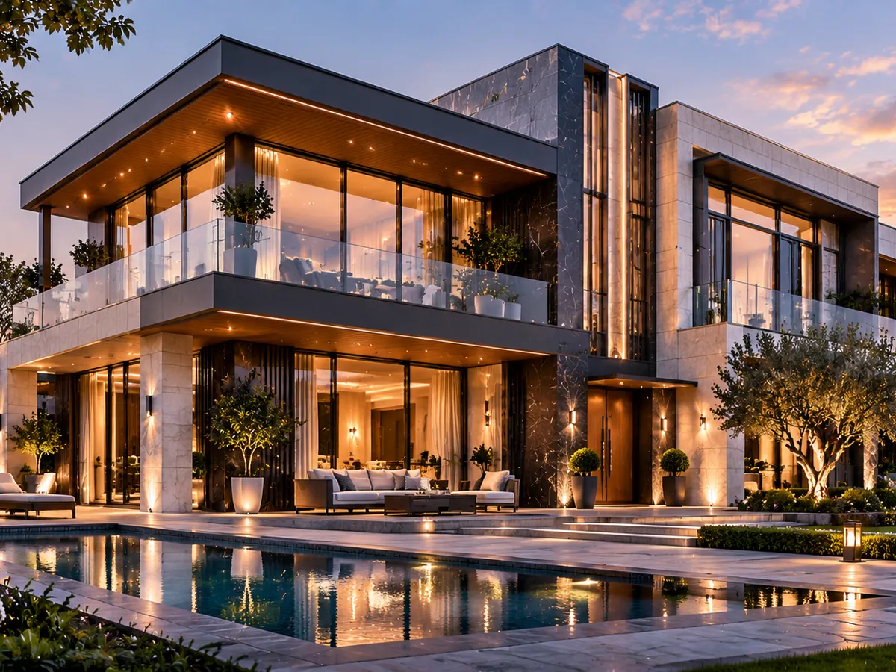

طرحهای مفهومی و ایدههای طراحی
سه نمونه زیر کانسپتهای تصویری هستند و برای نمایش رویکردهای متفاوت در معماری، متریال و کیفیت فضا ارائه شدهاند؛ نه بهعنوان پروژههای اجراشده.

طرح مفهومیفرم و ارتباط داخل و بیرون
در این کانسپت، حجمهای ساده و بازشوهای وسیع، ارتباطی پیوسته میان فضای داخلی و محوطه ایجاد میکنند. تأکید طرح بر نور طبیعی، تراس و تجربه آرامش در مجاورت طبیعت است.
مشاهده توضیحات پروژه ↗ طرح مفهومی
طرح مفهومیزندگی شهری و کیفیت فضا
این ایده بر ریتم نما، بالکنهای قابل استفاده، نور روز و پیوند فضای سبز با مسیرهای دسترسی تمرکز دارد. ترکیب سطوح شفاف و متریال با بافت طبیعی به ایجاد هویتی معاصر کمک میکند.
مشاهده توضیحات پروژه ↗ طرح مفهومی
طرح مفهومیعملکرد و هویت سازمانی
در این طرح، خوانایی ورودی، نظم خطوط عمودی، نور طبیعی و ارتباط بصری با محیط اطراف در نظر گرفته شدهاند. ایده اصلی، ایجاد فضایی حرفهای با تأکید بر عملکرد و شفافیت است.
مشاهده توضیحات پروژه ↗وضعیت هر سه مورد: طرح مفهومی. اطلاعاتی مانند کارفرما، موقعیت، هزینه و زمان اجرا در این نمونهها تعریف نشدهاند.